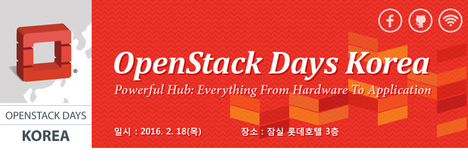

Keynote [09:30~10:00]
|
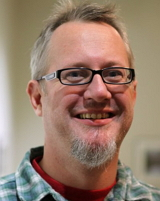 |
Title | Welcome to the Algorithm Economy |
| Name | Mark Collier, COO / OpenStack Foundation | |
| Speaker Profile | Prior to working on OpenStack, I worked at Yahoo! as Sr. Director of Business Development focused on strategic partnerships in the music business (via Yahoo's acquisition of Musicmatch), and previously at Dell in product, marketing, and technical roles.
I'm now the Chief Operating Officer of the OpenStack Foundation, and work full time to achieve the OpenStack Foundation Mission focused on "Protecting, Empowering, and Promoting OpenStack software and the community around it, including users, developers and the entire ecosystem." Outside of OpenStack, I love music, Austin, BBQ, wakeboarding on Lake Austin, and basketball (Rockets & Longhorns fan). I sometimes make angel investments but I mostly juggle working on OpenStack and spending time with my family. I usually go by "sparkycollier" on the interwebs, which is my way of honoring my late, great, Great Dane Sparky |
|
| Presentation Summary |
Keynote [10:00~10:20]
|
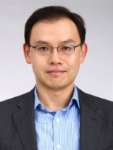 |
Title | How open HW and SW drives telco infrastructure innovations |
| Name | 이강원 상무 / SK텔레콤 | |
| Speaker Profile | Dr. Kang-Won Lee is a Senior Vice President of R&D for Information and Communications Technology (ICT) at SK Telecom. He is directing the technology development in the areas of potential synergy between Information and Communications Technologies. Specific areas of focus are Software-Defined Networks, Software-Defined Storage, Software-Defined Data Center (SDDC), Intelligent Network Analytics, and Open Hardware. Before SK Telecom, he worked at IBM Watson Research in NY for 14 years. At IBM he led technology development in the areas of Network Graph Analytics, Spatiotemporal Analytics for LBS, Network Function Virtualization, and Cloud Computing, IT and network management. He was a contributor to IBM TPC SAN configuration checker, and his team contributed to major features in Informix, SPSS, G2, Tivoli Netcool products.
Kang-Won published more than 100 technical articles in premier conferences and journals. He serves the technical community as a technical society president, advisor, journal editor, program chair, keynote speaker, and proposal reviewer. He holds a PhD in Computer Science from University of Illinois at Urbana-Champaign and a MS and a BS in Computer Engineering from Seoul National University. He is an ACM Distinguished Scientist and an IBM Master Inventor. |
|
| Presentation Summary |
Keynote 3 [10:20 ~ 10:40]
|
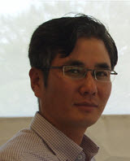 |
Title | 아이디어 이코노미에서의 하이브리드 IT전략 |
| Name | 박관종 상무 / HPE | |
| Speaker Profile | - 2014년 4월 ~ : 한국휴렛팩커드 클라우드 사업부 총괄
- 2009년 3월 ~ 2014년 3월 : 한국휴렛팩커드 서비스사업부 컨설팅 사업 담당 - 2007년 1월 ~ 2014년 2월 : 한국IBM 소프트웨어사업부 BI&PM 사업부 프리세일 담당 - 2000년 6월 ~ 2006년 3월 : 한국휴렛팩커드 컨설팅 사업부 기업고객 수석 컨설턴트 |
|
| Presentation Summary |
Keynote 4 [11:00 ~ 11:20]
 |
Title | Innovating OpenStack Network with SDN solution |
| Name | 박성용 CTO / KulCloud | |
| Speaker Profile | 박성용 박사는 2012년부터 쿨클라우드(주)의 CTO로 근무하고 있다. 쿨클라우드는 한국 최초의 SDN제어기 OpenMuL을 미국의 Nicira와 거의 동시에 개발할 정도로 기술력을 인정받고 있으며, OpenFlow 1.1, 1.3, 1.4 제어기를 모두 한국 최초로 출시했다. 쿨클라우드(주)는 지속적인 SDN 기술 개발을 통해 각종 국제 전시회 및 솔루션 경진 대회에서 시스코, 주니퍼, VMware 등과 함께 어깨를 나란히 하며 수상하고 있다. 현재 쿨클라우드는 혁신적 가상라우터인 프리즘(PRISM)을 개발해, 오픈스택, 오버레이망, WiFi, IoT에 적용하고 있다. 또한, 클라우드는 SDN, IoT 클라우드 도입을 고려하는 고객에게 토탈 컨설팅 서비스를 제공하고 있다.
박성용 박사는 연세대에서 전자공학과 학사, University of Illinois at Urbana-Champaign에서 전기전자 공학과 석사, 박사를 취득했으며, Cisco 산호세 본사에서 7600, 12000 라우터의 Senior Engineer, 삼성전자 수원에서 수석 엔지니어를 역임하고, 현재 연세대의 연구교수로도 활동하고 있다. 박성용 박사는 연세대 연구교수의 자격으로, 유럽과 아시아 9개국 19개 기관의 글로벌 가상자원을 연동하고 오케스트레이션하는 범 유럽 정부 과제인 Federation for FIRE라는 European FP7 과제의 한국 총 책임자 (Principal Investigator)를 맡고 있다 |
|
| Presentation Summary |
Keynote 5 [11:20~11:40]
 |
Title | An SDN Pioneer's Vision of Networking |
| Name | Guido Appenzeller, CTSO / VMware | |
| Speaker Profile | 귀도 아펜젤러는 VMware 네트워크 및 보안 부문의 기술전략을 총괄하는 CTSO(Chief Technology Strategy Officer)를 맡고 있다. VMware에 합류하기 전 빅 스위치 네트웍스(Big Switch Networks)를 창업하여 4년간 CEO로 회사를 이끌어 왔으며, 그 전에는 볼티지 시큐리티(Voltage Security)의 창업자 및 CTO로서 근무한 바 있다. 2008년에서 2010년까지는 스탠포드 대학의 교수 및 클린 슬레이트 랩(Clean Slate Lab)의 책임자로 재직했다. 아펜젤러 CTSO는 MIT TR35로부터 ‘최고 기술 리더’로 선정되었으며, 세계경제포럼이 선정한 ‘테크놀러지 파이오니어’, 그리고 골드만삭스가 발표한 ‘세계 100대 주목할 만한 기업가’에 선정된 바 있다. 아펜젤러 CTSO는독일 카를스루에(Karlsruhe) 공과대학에서 석사, 미국 스탠포드(Stanford) 대학에서 박사학위를 취득했다 | |
| Presentation Summary |
In this session, Guido Appenzeller---a founding member and pioneer of the SDN revolution---will share his vision on how networking is moving up the stack, and will discuss the role of OpenStack in this new age. The growing importance of public clouds, mobile devices, and multi-cloud strategies means that networking today is not about hardware but instead is about logical endpoints. The hard part is managing connectivity, compliance, and security in a scalable, policy-driven fashion. |
Keynote 6 [11:40~12:00]
|
|
Title | Microsoft is Open! |
| Name | 김명호 박사 / Microsoft | |
| Speaker Profile | - 1989. 한국과학기술원 전산학과 졸업 (공학박사)
- 1989 ~ 1999 동아대학교 컴퓨터공학과 교수 - 1997 ~ Oregon State University 객원교수 - 1999 ~ 2002 비트웹 기술이사 - 2003 ~ 현재 한국마이크로소프트 최고기술임원 (National Technology Officer, NTO), 상무이사 |
|
| Presentation Summary |
TrackⅠ [13:00~13:40 ]
|
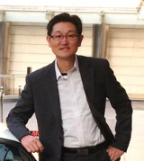 |
Title | Monasca를 이용한 Cloud 모니터링 |
| Name | 변상욱 부장 / HP | |
| Speaker Profile | - Cloud Consultant (현재)
- Cloud Technologist - HP Solution Architect |
|
| Presentation Summary |
TrackⅠ[13:50~14:30]
|
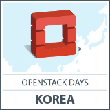 |
Title | All-Flash Ceph 구성 및 최적화 |
| Name | 엄주관 / SK텔레콤 | |
| Speaker Profile | SK텔레콤 Software-Defined Storage Tech. Lab에서 All-Flash Ceph 최적화에 참여하고 있습니다. 이전에는 LG전자에서 스마트폰을 비롯한 모바일 시스템 개발 업무를 수행하였습니다. | |
| Presentation Summary |
Ceph은 단일 플랫폼에서 Object / File System / Block 의 모든 서비스를 제공할 수 있는 ‘Scale-out’, ‘Software-Defined’ 오픈 소스 분산 스토리지 시스템으로 OpenStack에서 가장 많이 사용되는 Block 스토리지(Cinder) 드라이버입니다. 모든 디스크를 SSD로 사용해서 구축한 Ceph에서 발견했던 문제점, 이를 해결하기 위해 수행한 최적화 작업과 성과 그리고 SK텔레콤의 오픈 스택 기반 클라우드 스토리지 시스템으로 적용된 사례에 대해 소개합니다. |
Track I [14:40~15:20]
|
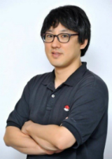 |
Title | Red Hat Enterprise Linux OpenStack Platform |
| Name | 최원영 이사 / 한국레드햇 | |
| Speaker Profile | 한국레드햇의 최원영 이사는 레드햇의 플랫폼, 스토리지 및 클라우드 제품의 솔루션아키텍트를 담당하고 있습니다. 기업의 IT 환경을 구축함에 있어 뛰어난 레드햇의 오픈소스 솔루션을 통해 비용절감과 효율적인 운영이라는 두마리 토끼를 잡을 수 있는 방안을 제시하는 오픈소스 전도사입니다. | |
| Presentation Summary |
본 세션에서는 기업용 프라이빗 클라우드 인프라 환경 구축을 위한 Red Hat OpenStack Platform에 대해 알아봅니다. |
Track I [15:30~16:10]
|
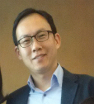 |
Title | Mellanox CloudX – Acceleration for Cloud Performance and Efficient Virtual Networking |
| Name | 정연구 이사 / Mellanox Technologies | |
| Speaker Profile | - 2014 ~ 현재 ) Mellanox Technologies,
High performance computing system &Datacenter 고성능, 가상화 네트워크 기술 담당. - 2012 ~ 2014 ) DELL, Enterprise Storage Solution 기술 담당 - 2008 ~ 2012 ) Brocade Communications Systems, Fiber Channel Networking 기술 담당. - 2001 ~ 2008 ) IBM, System and Technology Group, Enterprise Storage 기술 담당 |
|
| Presentation Summary |
Openstack Cloud 환경에서의 다양한 Network 성능이슈 해결을 위해 Cinder 및Ceph Storage 에 적용 가능한 RDMA 기술의 이해와 적용 및 효용성, VXLAN offload 및 확장된 네트웍 가상화 기능을 통한 효율적인 네트워크 인프라스트럭쳐의 구성과 성능 최적화 기술들에 대해 소개드립니다.
*RDMA (Remote Direct Memory Access) : 기존 IO communication 방식과 달리 CPU offload 하고 각각의 개별 node 간 Application level 에서의 Direct communication 을 통해 고성능 최저 지연을 지원하는 기술표준. |
TrackⅠ[16:20~17:00]
|
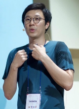 |
Title | 생존형 Hybrid cloud Platform 개발기 |
| Name | 송지형 / SK Planet | |
| Speaker Profile | 현재 SK Planet에서Openstack 기반 인프라 설계/구축과 자동화를 위해 안간힘을 쓰고 있는 엔지니어이자 Python을 사랑하는 개발자이기도 합니다. 이전에는 KT에서 ucloud 컴퓨팅 아키텍쳐 설계에 참여하면서 대규모 cloud 환경에 대한 경험을 하였습니다. 이후 VDI 인프라 설계 구축 프로젝트에 참여하면서 멀티테넌트 VDI 환경 관리를 위한 Platform개발에 참여 하였고, 현재는 이때의 경험을바탕으로 다양한 Hybrid cloud 를 통합하여 관리하기 위한 Platform 개발에 전념하고 있습니다. | |
| Presentation Summary |
현재 SK Planet에서는 다수의 물리 IDC에 다양한 cloud 환경을 구축하여 운영중에 있습니다. Openstack 뿐 아니라, 기존 가상화 환경인 VMware 와 Public cloud인 AWS 등 다양한 cloud 환경에서 대규모 인프라를 운영하고 있습니다.
이를 효과적으로 관리 하기 위해자체 개발한 Hybrid cloud platform인 “Empire” 프로젝트 개발 경험을 공유하고자 합니다. 또한 소규모 인력으로 인프라 설계/구축/운영 뿐 아니라 Platform 개발까지 하기 위해서 (생존을 위해) 반드시 필요했던 자동화와 모니터링등 다양한 고민과 시도들을 공유하고자 합니다. |
TrackⅠ[16:20~17:00]
|
|
Title | 카카오는 오픈스택 기반으로 어떻게 5000 VM을 운영하고 있을까? |
| Name | 하현 / 카카오 | |
| Speaker Profile | 現) 카카오 클라우드컴퓨팅셀
前) LG CNS 클라우드플랫폼팀 |
|
| Presentation Summary |
카카오에서는 오픈스택 기반으로 Private Cloud를 구축하여 현재 약 5000 개 정도의 VM이 running 중입니다.
오픈스택을 기반으로 대규모 클라우드 인프라를 구축하며 부딪혔던 다양한 문제들과 그것을 해결하기 위해 시도하고있는 여러 작업들을 공유하고자합니다. |
Track II [13:00~13:40]
|
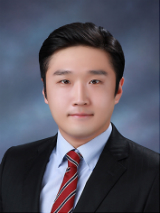 |
Title | 아리스타 OpenStack 연동 및 CloudVison 솔루션 소개 |
| Name | 조윤호 과장 / 아리스타 네트웍스 | |
| Speaker Profile | 현 아리스타 네트웍스 시스템 엔지니어
- CCIE#24976 (Routing and Switching / Wireless / Data Center) - CISSP / CISA 조윤호과장은 현재 아리스타 네트웍스아태 지역 시스템 엔지니어로 근무하고 있으며 다수의 국내 오픈스택 구축 프로젝트를 진행하였으며 이와 관련하여 차세대 클라우드 데이터센터 네트워크 디자인, 오픈소스를 이용한 데이터센터 네트워크 자동화 구현 및 빅데이터 전용 네트워크 설계 등의 고객사 컨설팅 업무를 담당하고 있다. |
|
| Presentation Summary |
아리스타의 OpenStack 연동 솔루션 소개
- ML2 기반 Plugin - Neutron 기반 L3 Plugin - Ironic과 연동한Baremetal Provisioning 클라우드 데이터센터 네트워크 인프라 관리 자동화 솔루션 소개 - 아리스타 CloudVision솔루션 |
TrackⅡ [13:50~14:30]
|
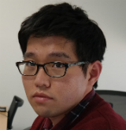 |
Title | How to speed up Openstack Network with PRISM |
| Name | 공석환 팀장 / Kulcloud | |
| Speaker Profile | 2010년 2월：연세대학교 전기 전자 공학과 졸업
2012년 2월：연세대학교 전기 전자 공학과 석사 2012년 3월~현재：연세대학교 전기 전자 공학과 박사 과정 2012 년 3월~현재 : 쿨클라우드 개발 팀장 |
|
| Presentation Summary |
클라우드와 함께 오픈스택은 가장 성공적인 프로젝트가 되었고, 최근에는Neutron 과 같은 네트워크 관련 오픈스택 프로젝트가 큰 관심을 받고 있다. 본 발표에서는 Neutron 의 기능을 하드웨어 가속화하기 위한 화이트박스 스위치와 쿨클라우드의 프리즘(SDN 기반의 가상 네트워크/라우터 솔루션) 기반의 솔루션을 소개하고, 오픈스택 데이터 센터 운용 및 응용사례에 대해 발표한다. |
TrackⅡ [14:40~15:20]
|
|
Title | 가상화 네트워크와 클라우드간 협업 |
| Name | 이호석 부장 / VMWare Korea | |
| Speaker Profile | NSX Senior Specialist Engineer, Network & Security Team, APJ
2015 – 현재: VMware NSX 담당 Senior Specialist Engineer 2011 – 2015: Senior Data Center Technical Support Engineer at Cisco Systems |
|
| Presentation Summary |
Track II [15:30~16:10]
|
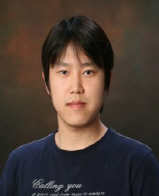 |
Title | 다음 1초에 당신이 봐야 할 것 |
| Name | 황인욱 / 아토리서치 | |
| Speaker Profile | Inwook Hwang is chief engineer at Atto Research Techinal Laboratory, developing SDN controller and network virtualization system. Before that, he was a research staff at TmaxSoft and Samsung Electronics. He received M.S. degree in EECS from SNU, in 2007. His research interests include SDN, operations research, and data/web mining. | |
| Presentation Summary |
클라우드, IoT, 더 빠른 이동통신 환경에서 다양한 데이터를 대량으로 처리하게 되면서, 네트워크 보안과 관리에 필요한 비용은 급증하고 있다. 이렇게 컴퓨팅 환경 관리가 어려워지는 중요한 이유는 복잡하게 구성되어 운영되는 데이터 센터이다. 아토리서치는 이러한 데이터센터를 효율적으로 운영하고 관리하기 위해 3D 시각화, 빅데이터 분석, SDN 제어의 융합을 통해 새로운 패러다임의 솔루션을 제시한다. |
Track II [16:20~17:00]
|
|
Title | 데이터센터에 부는 오픈 소스 하드웨어 바람 |
| Name | 유명환 연구소장 / 엑세스 | |
| Speaker Profile | - 엑세스 주식회사 연구소장 (CTO)
- 정부통합전산센터 클라우드 기술위원 - 미래부 SW마에스트로 멘토 - 네이버 D2 Startup Factory 파트너 - 오픈스택 한국 커뮤니티 네트워크 분과장 |
|
| Presentation Summary |
더 이상 논의가 필요 없을 정도로 일반 사용자 소프트웨어나 엔터프라이즈 서버 소프트웨어는 이미 오픈 소스 소프트웨어 시대로 접어 들었고, 클라우드와 빅데이터의 필요조건인 데이터 수집용으로 엔터프라이즈 기업들은 사물인터넷(IoT)을 띄우기 시작했으며 여기에 아두이노(Arduino)나 라즈베리 파이(Raspberry Pi)와 같은 오픈 하드웨어가 자리를 잡아가고 있다.
클라우드 서비스 가격의 무한 경쟁 시대를 맞이하여 갈수록 데이터센터의 차별화를 원하는 기업들의 요구에 따라 소프트웨어 정의(Software Defined Anything, SDx) 시대에 접어들고 있고 이에 따라 페이스북의 OCP (Open Compute Project)와 같은 오픈 소스 하드웨어에 대한 열풍이 강하게 불고 있다. 이에 왜 데이터센터에 오픈 소스 하드웨어 바람이 강하게 불고 있는지 관련 내용을 살펴보고자 한다. |
TrackⅡ [17:10~17:50]
|
|
Title | OpenStack기반 소프트웨어 정의 스토리지 기술 |
| Name | 조만석 / OSS개발자센터 | |
| Speaker Profile | (1995~1997) MIS 개발&운용, War game 시스템개발
(1998~2000) Bio-medical Image Processing R&D (2001~2004) HPC 기반 Bio-medical Image Processing R&D (2004~2014) Enterprise Network System R&D (2014~) 공개소프트웨어개발자 (OPNFV, OpenStack, Linux Kernel) 전문분야: -클라우드 인프라 가상화 (OpenStack, OPNFV, SDN/NFV) -HPC기반 데이터 프로세싱 |
|
| Presentation Summary |
스마트폰을 비롯한 SNS, 빅데이터 분석, 그리고 사물 인터넷 등 다양한 정보통신서비스(ICT)는 많은 다양한 매체와 수단으로 전파&활용되고 있습니다. 시간이 갈 수록 데이터 양은 급격하게 늘어가지만, 이를 위한 스토리지 기술은 하드웨어에 제한으로 그 한계에 다다르고 있습니다. 하드웨어에 기반한 스토리지 기술을 소프트웨어를 활용하여 보다 효율적인 서비스를 제공하고자 하는 것이 소프트웨어 정의 스토리지 기술입니다. 본 발표는 기존의 데이터 저장부터 OpenStack에 기반한 소프트웨어 정의 스토리지 기술의 소개하고 활용에 대하여 이야기 하겠습니다. |
Track III [13:00~13:40]
|
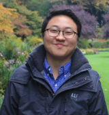 |
Title | 오픈스택 환경에서 공유 파일 시스템 구현하기: 마닐라(Manila) 프로젝트 |
| Name | 서상원 차장 / NetApp | |
| Speaker Profile | 현재 한국 넷앱에서 SE(Systems Engineer)로 일하고 있으며 국내 클라우드 서비스 공급업체를 위한 클라우드 스토리지 아키텍처 설계 및 구현 업무를 담당하고 있다. 이전에는 EMC 및 Oracle에서 일했으며 서버 가상화, VDI, 클라우드 등의 다양한 프로젝트 경험을 보유하고 있다. | |
| Presentation Summary |
지금까지 오픈 스택 환경에서 파일 공유 기능이 지원되지 않아 비즈니스 크리티컬 업무 및 콘텐츠 관리 애플리케이션 구동에 어려움을 겪거나 인스턴스간 데이터를 공유하는데 한계가 존재했다. 그러나, Juno 버전부터 진행 되었던 파일 공유 서비스 프로그램인 마닐라 프로젝트는 신규 오픈 스택 버전인 Liberty 버전에서 엔터프라이즈 기업 서비스에도 활용이 가능한 단계에 돌입했다.
마닐라 프로젝트를 실질적으로 이끄는넷앱의클러스터드 데이터온탭(Clustered Data ONTAP)을 통해 오픈스택 환경에서 파일 공유 서비스를 구현 할 수 있는 방안에 대해 알아 보도록 하겠다. |
Track III [13:50~14:30]
|
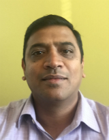 |
Title | OpenStack on 64-bit ARM with X-Gene |
| Name | Kumar Sankaran / AppliedMicro | |
| Speaker Profile | Kumar Sankaran is the Associate Vice President of Software and Platform Engineering at Applied Micro. He is responsible for the software architecture/development and platform engineering for the X-Gene and X-Weave family of products from Applied Micro. In addition, he handles the software eco-system development and promotion within the ARM64 community. Kumar has been a member of all the ARM64 server standards organizations. He has a Bachelor of Engineering degree in Electronics Engineering, a Master of Science degree in Computer Science and an MBA degree in Marketing/Finance and joined Applied Micro in 2010. | |
| Presentation Summary |
OpenStack on the 64-bit ARM server architecture has grown rapidly over the past couple of years. In this session, we will dive into the OpenStack deployment running over KVM under Ubuntu on the Applied Micro X-Gene based 64-bit ARM multi-node server cluster using the MAAS infrastructure within Ubuntu for the hardware provisioning. We will be using the Ubuntu Juju charms infrastructure to deploy the various components within OpenStack and walk thru some services and applications that can be installed on this platform. |
Track III [14:40~15:20]
|
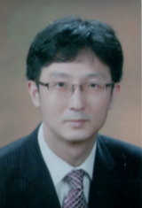 |
Title | Powered by OpenStack, Power to do more with Future-Ready Enterprise |
| Name | 윤선욱 부장/Dell | |
| Speaker Profile | Enterprise Solution Group / 공공부문
System Consultant |
|
| Presentation Summary |
Powered by OpenStack, Power to do more with Future-Ready Enterprise
요약 : Openstack은 개방성, 확장성 및 세계적인 커뮤니티의 지원을 통하여 Open Cloud환경에 중요한 리더로서 역활을 수행하고 있습니다. 이러한 Open Stack의 방향성은 미래비지니스 환경을 지원하기 위한 Dell의 Future-Ready Enterprise 의 핵심가치와 부합된다. 본세션에서 Dell이OpenStack과의 협력 및 지원을 통해 Private Cloud를 쉽고안정적으로 구축하는 방법을 제안하고자 한다. |
Track III [16:20~17:00]
|
|
Title | 클라우드와 방송제작용 스토리지 |
| Name | 임태현 / KBS | |
| Speaker Profile | 현) KBS 방송시설국
전) 삼성전자 미디어솔루션센터 전) 티맥스소프트 재팬 |
|
| Presentation Summary |
방송제작용 UHD 스토리지 구성 및 테스트 과정과 결과 공유 |
Track III [17:10~17:50]
|
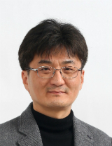 |
Title | VDI on OpenStack with LeoStream Connection Broker |
| Name | 이보성 / GotoCloud | |
| Speaker Profile | 이보성 박사는 90년대 중반 항공우주공학을 전공하면서 직접 리눅스HPC클러스터를 구축한 경험을 바탕으로 리눅스원㈜에서 HPC(High Performacne Computing)클러스터사업을 진행하고, KISTI 슈퍼컴퓨팅센터에서 HPC클러스터개발을 담당하였다. 이후 삼성SDS컨설턴트를 거쳐, 2008년부터는 XenServer와 XenDeskop 가상화컨설팅 및CloudStack 컨설팅을 수행하였다. 이후 국산클라우드 솔루션비즈니스와 망분리솔루션비즈니스를 수행하면서 클라우드컴퓨팅 보안, 데스크탑가상화기반망분리 등의 다수의 프로젝트와 강의를 진행해오고 있다. 현재는 연세대학교 바른ICT연구소에서 클라우드컴퓨팅보안 및 개인정보보호, IoT 및 빅데이터 개인정보보호에 대해서 연구를 진행하고 있다. 이보성 박사는 서울대학교 항공우주공학과에서 박사학위를 취득했다. | |
| Presentation Summary |
LeoStream Connection Broker를 이용하여 OpenStack IaaS 인프라에서 VDI(Virtual Desktop Infrastructure)를 구현하고, Citrix XenDesktop, VMware Horizon View 등 데스크탑가상화 솔루션과 OpenStack 기반의 VDI 환경의 장단점에 대해서 알아보고자 한다. 이와 함께, OpenStack 상에서 VDI를 구현할 경우 고려해야할 사항에 대해서도 기존의 VDI 환경과의 차이점을 비교하여 살펴보고자 한다. |
Track Ⅳ [13:50~14:30]
|
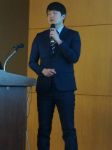 |
Title | OpenStack With Kubernetes |
| Name | 박재권 / 락플레이스 | |
| Speaker Profile | 오픈소스 전문회사인 RockPLACE에 클라우드팀에서 근무중이며 현재 Openstack 이외 AWS, GCP 등 Public 클라우드 관련된 업무들도 하고 있습니다.
오픈스택 커뮤니티 뿐만 아니라 우분투 한국 사용자 모임과 GCP 한국 사용자 모임 등의 커뮤니티에서 활동 하고 있습니다. |
|
| Presentation Summary |
Google에서 공개한 opensource Project인 Kubernetes에 대하여 설명하고 Iaas Private Cloud인 openstack과 Pass Private Cloud인 Kubernetes와 장단점을 비교해보고 kubernetes의 구조등에 대하여 알아보고 Openstack 위에서 Kubernetes/Container를 구현할 수 있는 방법들에 대하여 소개하고자 합니다. |
Track IV [14:40~15:20]
|
|
Title | 해외 사례로 보는 OpenStack Billing System |
| Name | 장현정 / ASD Korea | |
| Speaker Profile | - ASD Korea Cloudike 시스템 엔지니어
- 오픈스택 한국 커뮤니티 대표운영진 - (사)오픈소스진흥협회 이사 - HP Helion MVP(Most Valuable Professional) -“오픈스택을 다루는 기술” 저자/2014년 10월/길벗 - 클라우드 관련 개인 특허 등록/2015년 10월 |
|
| Presentation Summary |
오픈스택으로 상용화를 한다면 어떻게 과금을 해야 할까?
어떤 것들을 관리하고 모니터링 해야 하는 걸까? 과금 정책은 어떻게 가져가면 좋지? 다른 나라에서는 오픈스택으로 상용화를 할때 어떻게 과금을 할까? CROC, DataPro, Annai Systems, Rostelecom 과 같은 곳의 오픈스택 구축 사례 및 빌링 시스템 기술을 알아보고자 합니다. |
Track IV [16:20~17:00]
|
|
Title | Deep Dive: k8s with docker |
| Name | 안승규 부대표 / OpenStack Korea | |
| Speaker Profile | 2011년 부터 2014년까지 오픈스택 Diablo 버전 부터 Private Cloud 구축을 진행하였습니다.
2015년 부터는 Cloud Foundry 기반으로 PaaS 구축을 진행하였고, 현재는 Kubernetes 기반의 PaaS 구축에 관심을 갖고 있습니다. |
|
| Presentation Summary |
Kubernetes의 소스 구조, 아키텍처, 세부 작동 원리에 대해서 설명합니다. 또한 Kubernetes 로 PaaS 를 구축할 때 고려해야 할 사항을 살펴 봅니다.
|
Track Ⅳ [17:10~17:50]
|
|
Title | OCP 하드웨어 및 소프트웨어 삽질기 |
| Name | 서준호 / SK텔레콤 | |
| Speaker Profile | - 2010.03 – 2015.02 서울대학교 컴퓨터공학부 박사 (MMLAB, 지도교수 권태경, 최양희)
- 2008.03 – 2010.02 서울대학교 컴퓨터공학부 석사 (MMLAB, 지도교수 권태경, 최양희) - 2004.03 – 2008.02 카이스트 컴퓨터공학부 |
|
| Presentation Summary |
본 발표에서는 OCP 하드웨어 및 소프트웨어에 대한 소개를 진행할 예정이다.
특히 페이스북에서 제공한 Wedge ToR 스위치, Open Network Linux, FBOSS, Indigo OpenFlow agent 를 갖고 삽질한 지난 두달 간의 경험을 공유할 예정이다. |